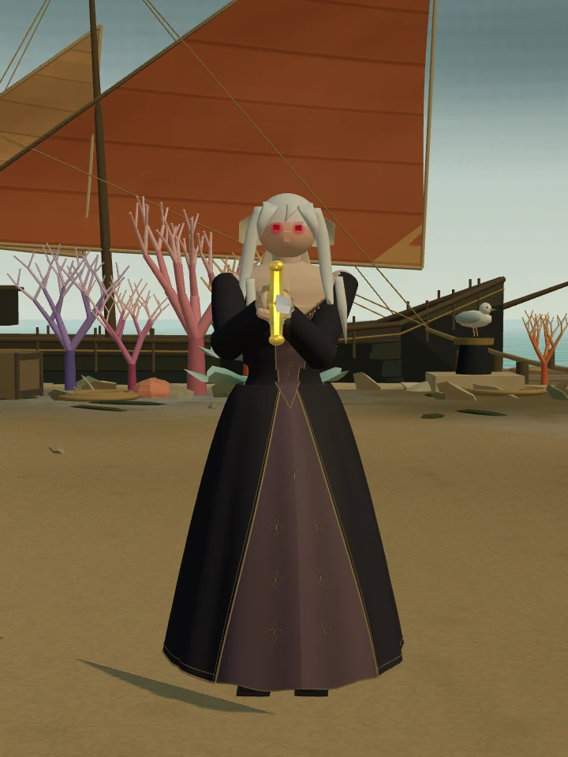
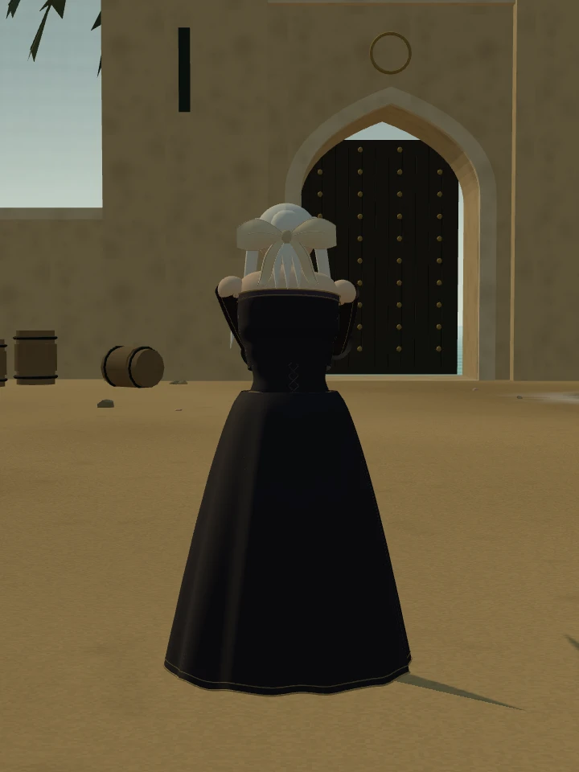
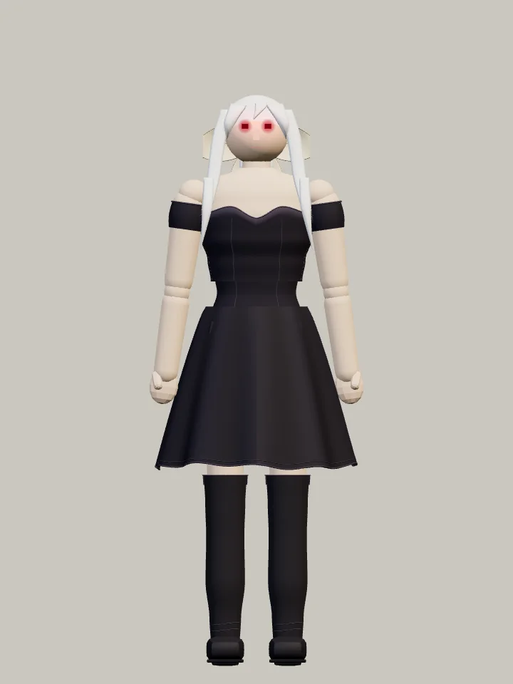
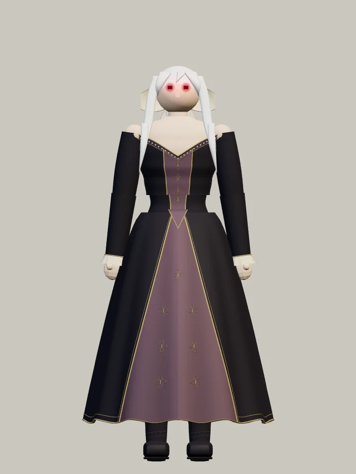
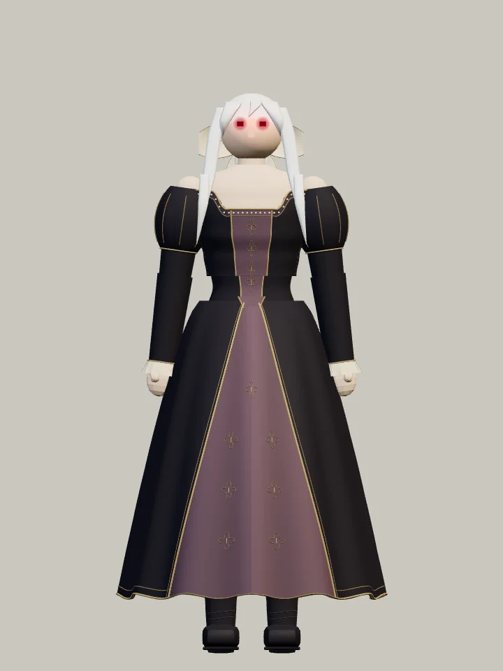
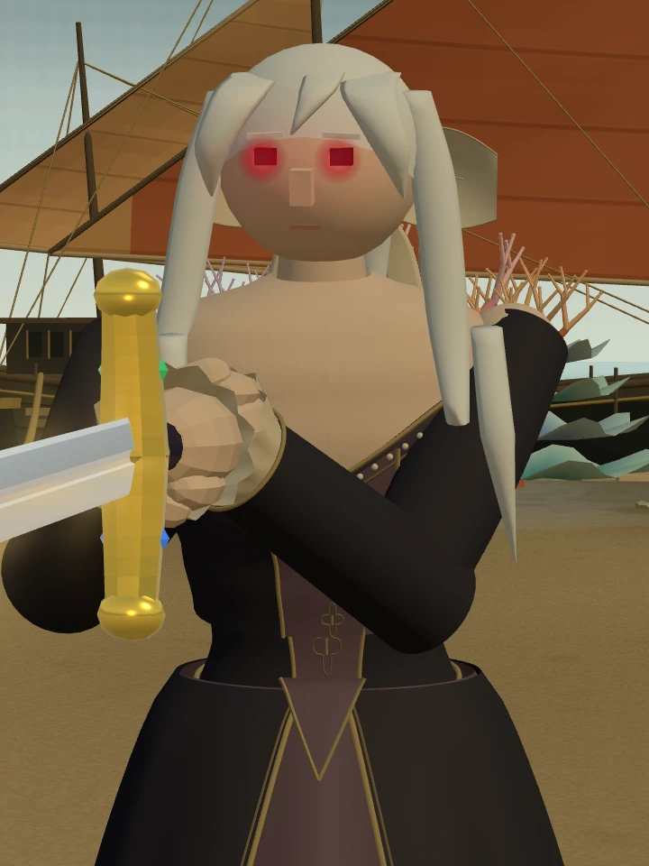
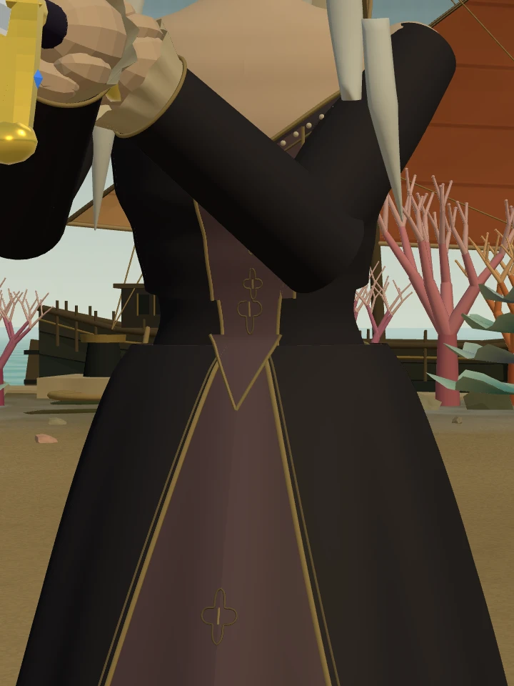
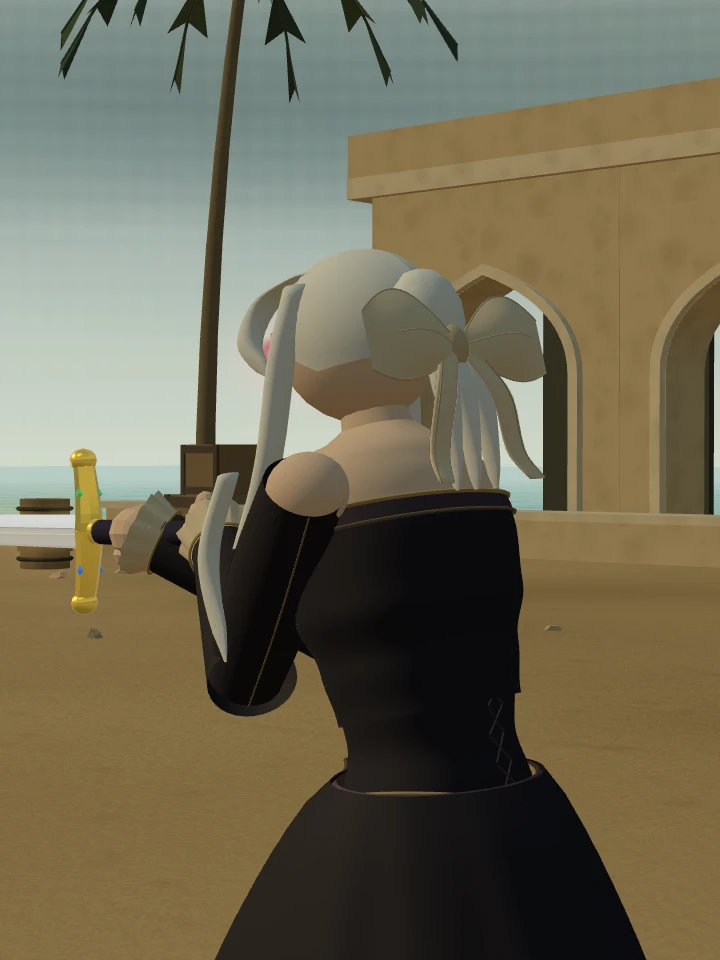

Stillness · 적막
검을 든 궁정의 여왕
발목까지 흐르는 검은 겹치마.
탁한 포도주색 비단과 오래된 금빛 자수.
아르토리아 얼터 · 고풍스러운 예복 시안
아르토리아 · 앞과 뒤




중앙으로 내려오는 완만한 V자 목선과 뾰족한 허리선, 팔을 따라 붙는 가는 소매와 손목 주름. 검은 겉치마 사이로 문양 비단을 드러내고 금실 장식을 둘렀습니다.
짧은 원피스에서 궁정 예복으로




같은 조명·카메라·축척의 게임 모델 관찰 화면. 비교를 위해 무기를 숨기고 팔을 내렸습니다.
어깨와 목선 수정 전후


목선·금실·겹치마 자세히 보기





움직일 때의 모습
4초 · 실제 AI 동작을 따라가는 관찰 카메라입니다. 복장이 보이도록 플레이어의 모습만 숨겼습니다.
원래 은발과 엑스칼리버, 붉은 안광은 유지했습니다. 갑옷 방어가 없는 기존 설정과 전투 수치·검술도 같습니다.
르네상스 궁정 복식의 요소를 참고한 창작 예복입니다. 기존 산호 항구에서 외형을 확인하는 검토판이며, 일반 여정의 상대 배정은 유지합니다.